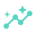

Nermyca собирает производственную ситуацию из данных и знаний, разрозненных по системам предприятия.
SCADA показывает текущее состояние. ТОиР хранит историю обслуживания и ремонтов. MES описывает производственный процесс. ERP и склад содержат сведения о ресурсах. Документация задаёт требования и регламенты. Люди хранят накопленный опыт. Nermyca собирает эти сведения вокруг конкретного оборудования и происходящей с ним производственной ситуации.
Вместо разрозненных фактов инженер получает собранную воедино картину происходящего и основание для действия.
- Не ещё одна система мониторинга или предиктивной диагностики
- Завершён работающий воспроизводимый промышленный демонстратор
- Следующий рубеж — производственный пилот
7,3 мм/сВибрация
+12 °CТемпература
14 мес.История
8 300 чНаработка
SKF 6312Запасная часть
2 специалистаКомпетенции
Мониторинг показывает сигнал.
Nermyca понимает ситуацию.
Nermyca не заменяет существующие промышленные системы. Она использует накопленные в них данные и дополняет их другими знаниями предприятия.
SCADA / ПЛК
ТОиР / EAM / CMMS
MES
ERP / склад
Документация
История
Инженерный опыт
→
NERMYCA
→
Связанная производственная ситуация
Nermyca не добавляет предприятию ещё один изолированный источник данных. Она объединяет сведения из существующих систем, документов, истории и инженерного опыта вокруг реальной производственной ситуации.
IIoT собирает сигналы. Предиктивная диагностика ищет отклонения и признаки отказа. SCADA показывает и контролирует технологический процесс. MES управляет производством. ТОиР управляет обслуживанием и ремонтами. Nermyca превращает данные о состоянии, истории, процессах, ремонтах, ресурсах и знаниях в объяснимую производственную ситуацию.
А если этих систем нет? Nermyca не требует, чтобы предприятие уже имело полный цифровой контур. Там, где необходимые данные и функции уже существуют, Nermyca использует их. Там, где их не хватает, Nermyca может сформировать недостающий контур собственными средствами — от сбора состояния оборудования и его истории до диагностики, процессов обслуживания и инженерного контекста. Поэтому Nermyca применима и на современном цифровом производстве, и там, где часть оборудования и процессов ещё остаётся «немой».
Предприятие знает многое. Но ни одна система не видит ситуацию целиком.
Каждая система решает свою задачу и содержит
лишь часть необходимых инженеру сведений. Проблема начинается, когда инженер должен понять одну реальную
производственную ситуацию: что
происходит с конкретным оборудованием, почему, происходило ли это раньше, что связано с ним, чем грозит
вмешательство, есть ли нужная деталь, что говорит документация и кто способен выполнить работу.
Сегодня эту картину обычно собирает человек — вручную из нескольких систем, документов, журналов и разговоров.
Nermyca собирает из этих сведений единую производственную ситуацию.
Проблема не в недостатке данных.
Проблема в
том, что знания предприятия не связаны вокруг происходящего.
Оборудование умеет говорить числами.
Но не умеет рассказывать свою
историю.
Сигнал сам по себе ещё не является ситуацией. Чтобы понять его смысл, нужно знать историю жизни оборудования и его место в предприятии.
Современное оборудование уже знает многое о своём состоянии.
- Температура
- Вибрация
- Питание
- Давление
- Нагрузка
- Ошибки контроллера
Но оно не знает, что восемь месяцев назад его
ремонтировали.
Что после ремонта инженер оставил замечание.
Что похожее сочетание признаков уже однажды закончилось отказом.
Что связанный агрегат одновременно изменил режим работы.
Что необходимая деталь лежит на складе.
Что документация требует определённой проверки.
И что сегодня на смене есть человек, который умеет её выполнить.
Nermyca соединяет текущее состояние оборудования с его историей, окружением, документацией, ресурсами и знаниями предприятия.
У оборудования появляется память и собственная
история.
У предприятия — связанная картина происходящего.
Увы, не всё оборудование вообще умеет рассказать даже о своём текущем состоянии.
Старый двигатель, насос или станок иногда похож на маленького ребёнка - плачет, но не может сказать, где болит.
Такому оборудованию Nermyca помогает дать голос через собственный
контур измерений.
А там, где датчики и системы уже существуют, Nermyca связывает их данные с историей, процессами и знаниями
предприятия.
Если оборудование уже умеет говорить — Nermyca
слушает.
Если оно молчит — Nermyca даёт ему голос.
Предприятие начинает говорить голосом Nermyca
Nermyca не ждёт правильного вопроса.
Nermyca
замечает ситуацию, собирает связанные факты и объясняет человеку, что происходит.
Nermyca · рапорт
За последние 14 дней обнаружен устойчивый рост вибрации и температуры подшипникового узла.
Аварийные пороги ещё не превышены. Насос продолжает работать.
Похожее сочетание признаков наблюдалось 14 месяцев назад. Тогда причиной оказался износ подшипника.
После последней замены подшипниковый узел отработал 8 300 часов. Текущая динамика отличается от его обычного режима работы.
Согласно эксплуатационной документации при обнаруженных признаках требуется проверка подшипникового узла.
Последствия остановки
Насос №17 обеспечивает циркуляцию охлаждающей воды в контуре охлаждения технологической линии. Его остановка приведёт к потере подачи на теплообменник Т-204 и потребует остановки компрессора К-12.
Ресурсы
На складе имеется совместимый подшипник SKF 6312-2Z/C3, артикул 6312-2Z/C3 — 2 шт. Место хранения: Центральный склад → Стеллаж B-04 → Ячейка 12.
Персонал
На текущей смене доступен слесарь-ремонтник 6 разряда И. Соколов. В его профиле компетенций подтверждён опыт обслуживания насосных агрегатов этой серии и замены подшипниковых узлов.
Рекомендация
Провести проверку подшипникового узла в ближайшее технологическое окно и подготовить замену подшипника на случай подтверждения износа.
Основание
Текущие измерения · история эксплуатации · аналогичный случай · документация · связи оборудования · склад · компетенции персонала.
Пример рапорта, который Nermyca собирает и передаёт ответственному инженеру.
Каждый вывод можно раскрыть до исходного факта, измерения или документа. Решение остаётся за человеком.
Это и есть отличие Nermyca: не отдельный сигнал, прогноз или запись о ремонте, а одна ситуация, собранная из измерений, истории, связей, документов, ресурсов и опыта — с проверяемым основанием каждого вывода.
Представьте, что вы можете спросить у предприятия:
- Что сейчас требует моего внимания?
- Почему ты так считаешь?
- Такое уже происходило?
- Что будет, если ничего не делать?
- Что остановится, если я вмешаюсь?
- Есть ли нужная деталь?
- Кто может это исправить?
- Что рекомендует документация?
- Что рекомендуешь ты?
— и получить один ответ, собранный из реального состояния предприятия, его истории и знаний.
Это не перечень возможностей чат-бота. Человек обращается не к очередной базе данных, а к накопленному связанному контексту самого предприятия.
Что меняет Nermyca?
Надёжность оборудования
- Меньше аварий и незапланированных простоев. Развивающаяся неисправность может стать заметной до отказа. У предприятия появляется время проверить оборудование, подготовить специалиста и запчасти и выбрать подходящее технологическое окно.
- Больше ресурса — меньше лишних замен. Решение об обслуживании учитывает фактическое состояние оборудования и его историю, а не только календарный интервал. Исправный узел не нужно менять преждевременно, а изношенный — эксплуатировать до отказа.
Люди и время
- Быстрее диагностика. Инженеру не приходится вручную собирать ситуацию из нескольких систем, документов, журналов и разговоров.
- Сокращение ручного сбора метрик. Непрерывный автоматический сбор измеримых параметров позволяет реже отправлять специалиста к оборудованию только ради снятия показаний.
- Специалист направляется туда, где действительно требуется человеческий осмотр или вмешательство.
- Обходы не исключаются: там, где нужны глаза, слух и обоняние человека, без специалиста не обойтись.
Инженерные решения
- Меньше ошибочных решений. Перед человеком — связанная ситуация и основание для решения, а не отдельный сигнал.
- Более быстрый путь от симптома до действия: связанные факты, документация, ресурсы и возможное действие.
- Понимание последствий вмешательства. До остановки агрегата можно понимать, какие процессы и связанное оборудование она затронет.
Знания предприятия
- Сохранение инженерных знаний. Причины отказов, результаты ремонтов, наблюдения и успешные решения не должны исчезать после ухода/смены специалиста.
- Снижение зависимости от отдельных незаменимых людей. Знания предприятия должны принадлежать предприятию.
- Каждый новый случай обогащает историю для будущих решений.
Использование существующих данных
SCADA, ERP, ТОиР, датчики, документы и знания людей начинают работать вместе вместо создания ещё одного информационного острова. Если существующих данных недостаточно — появляется собственный контур измерений.
«Голос» для старого оборудования
Если оборудование само не способно сообщить необходимые данные о состоянии, Nermyca получает их через собственный контур датчиков и будущие узлы Octopus.
Удалённая осведомлённость
Значимая ситуация может быть доставлена ответственному человеку независимо от того, находится он рядом с агрегатом, в другом здании или дома. Ценность — в содержании и контексте уведомления, а не в самом факте «уведомления на телефон».
Меньше времени на сбор данных.
Больше времени на
инженерную работу.
Автоматика не отменяет человека.
Она освобождает
человека от необходимости постоянно быть датчиком и статистом.
Контроль реакции предприятия на производственные события
Недостаточно вовремя обнаружить проблему. Нужно убедиться, что предприятие вовремя на неё отреагировало.
После регистрации значимого события Nermyca учитывает: кому направлено уведомление; подтверждено ли его получение; назначен ли ответственный; зарегистрирована ли проверка; начаты ли необходимые действия; сколько времени прошло с момента события; продолжает ли состояние ухудшаться; требуется ли эскалация следующему уровню ответственности.
- Оборудование
- Состояние
- Событие
- Ответственный человек
- Ожидаемая реакция
- Фактическая реакция
- Эскалация при необходимости
- Результат
Событие не заканчивается уведомлением.
Nermyca видит, последовала ли необходимая реакция, и эскалирует критическую ситуацию, если действий нет.
Nermyca отвечает не только на вопрос «Что происходит с оборудованием?», но и: «Что предприятие делает в ответ?»
Когда предусмотренная реакция отсутствует
02:31. На компрессоре №4 развивается критическое отклонение. Nermyca регистрирует событие и уведомляет предусмотренного ответственного сотрудника. Проходит установленное время. Подтверждение отсутствует. Проверка оборудования не зарегистрирована. Состояние продолжает ухудшаться. В 02:43 Nermyca выполняет эскалацию и уведомляет начальника цеха.
Nermyca · эскалация
В 02:31 зарегистрирован рост температуры и вибрации подшипникового узла выше допустимого диапазона.
Реакция персонала на 02:43 не обнаружена.
Получение события ответственным сотрудником не подтверждено.
Проверка оборудования или начало работ не зарегистрированы.
Текущее состояние: оборудование продолжает работать. Динамика параметров продолжает ухудшаться.
Эскалация
Предусмотренная реакция в установленный срок не обнаружена. В 02:43 уведомлён начальник цеха.
Руководителю не нужно постоянно смотреть на оборудование. Nermyca зовёт его тогда, когда ситуация требует уже его внимания.
Начальника будит не просто превышенный порог датчика. Его будит ситуация: с оборудованием происходит что-то серьёзное — и предусмотренная реакция предприятия отсутствует.
Увидеть проблему — недостаточно.
Ценность
появляется, когда информация вовремя превращается в действие.
Цена опоздания измеряется простоем, внезапным ремонтом и запоздалой реакцией.
Опубликованные отраслевые ориентиры стоимости промышленной проблемы (не показатели Nermyca).
Расчёт по опубликованным целевым показателям проекта предиктивной аналитики МНЛЗ ЕВРАЗа. Источник →
Ориентиры ЕВРАЗа (цели проекта)
В опубликованном кейсе приводятся целевые показатели: сокращение
простоя на 135 часов → 115 млн ₽; на 27 часов → 36 млн ₽; на 26,9 часа → 35,4 млн ₽.
Фактические эффекты после внедрения приведены в том же материале отдельно. Здесь — только целевые цифры,
чтобы показать цену часа.
Структура стоимости аварии
По материалам Центра развития базовых отраслей промышленности при Минпромторге России: остановка производства; нарушение сроков поставок; сверхурочная работа; срочная логистика запасных частей; дополнительный износ смежного оборудования.
Из чего складывается эффект
Предотвращённый или сокращённый незапланированный простой; уменьшение последствий аварийных ремонтов; более рациональное использование ресурса оборудования; сокращение времени диагностики и ручного сбора показаний; заранее подготовленные запчасти и специалисты; снижение вероятности ошибочного решения; сокращение времени от события до реакции; сохранение инженерных знаний; использование уже имеющихся данных предприятия.
Метрики пилота
Время от сигнала до собранной картины и до решения инженера. Число ложных тревог. Доля ситуаций, где план утвердили без ручного сбора контекста с нуля.
Неожиданный отказ
- простой
- потеря выпуска
- аварийный ремонт
- срочная логистика
- сверхурочные
- возможный дополнительный износ
- возможное нарушение сроков поставки
Раннее обнаружение и подготовка
- проблема обнаружена раньше
- причина исследована
- технологические последствия известны
- деталь подготовлена
- специалист определён
- подходящее окно выбрано
- вмешательство становится плановым
Потеря из‑за запоздалой реакции
Проблема возникла → проблема обнаружена → сигнал зарегистрирован → уведомление отправлено → реакция запоздала → состояние ухудшилось → аварийная остановка / дополнительные потери.
Экономика начинается не только с аварии. Регулярные
обходы и ручное снятие показаний тоже стоят рабочего времени.
В одном опубликованном кейсе удалённого мониторинга ежедневные обходы сократились примерно с 2,2 до 1,2 часа —
пример того, сколько времени уходит на ручной сбор измеряемых параметров.
Источник →
Цена Nermyca определяется не количеством собранных
сигналов.
Она определяется ценой решения, которое предприятие успело принять вовремя.
Рынок
Рынок промышленного интернета вещей и систем состояния оборудования
велик и растёт. Стратегия Nermyca —
узкий вход: критичные активы цеха, развёртывание на площадке предприятия, объяснимый инженерный
контур.
Первый фокус — Россия, СНГ и близкие отрасли: энергетика, добыча, процессные производства.
Путь роста: пилоты на реальных площадках, затем платящие контуры — без гонки за массовым охватом в первый
год.
Модель выручки
Оплата за контур — площадка, число активов, линия — и внедрение, а не
«за каждый датчик».
Типовой путь: пилот на ограниченном контуре, затем годовое сопровождение с расширением охвата и глубины
интеграций. Условия и объём — в прямом разговоре.
Octopus добавит аппаратную выручку позже. Основа первой версии — программный контур с высокой маржой после
внедрения.
А что, если так сможет любая сложная машина?
Картины того, куда может вырасти тот же принцип. Не список уже работающих применений.
Автомобиль
Представьте автомобиль, который сообщает не просто код неисправности, а учитывает собственную историю обслуживания, режим эксплуатации, заменённые детали и первые изменения связанных параметров.
Локомотив
Локомотив, который знает историю каждого критичного узла и способен связать изменение его состояния с прошлыми ремонтами и условиями эксплуатации.
Судно
Судно, где силовая установка, насосы, генераторы и вспомогательные системы существуют не как тысячи отдельных показаний, а как единый технический организм со своей памятью.
Самолёт
Самолёт, где огромный поток уже существующих измерений связан с конкретными компонентами, их заменами, документацией, историей обслуживания и эксплуатационными событиями.
Автономная техника
Автономная машина, которая умеет анализировать не только окружающий мир, но и саму себя.
Меняется машина.
Меняются
датчики.
Меняется транспорт данных.
Не меняется принцип:
физический объект → состояние → история → связи → знания → действие.
Сегодня Nermyca начинается с промышленного предприятия. Но её базовая идея не привязана к заводу: дать сложной технической системе память о собственной жизни, понимание текущего состояния и возможность объяснить человеку, что с ней происходит.
Завод — первая площадка.
Не предел
технологии.
Мониторинг показывает, что происходит.
Nermyca объясняет, что это значит
— и что делать дальше.
Текущее состояние+
История эксплуатации+
События и ремонты+
Документация+
Технологические связи+
Запасы+
Компетенции+
Инженерные знания+
Реакция персонала
Связанный промышленный контекст
Обоснованное действие человека
SCADA / мониторингЧто происходит
сейчас?
ТОиРЧто и когда обслуживать?
ERPКакие есть ресурсы?
ДокументацияКак это должно работать?
База знанийЧто мы об этом знаем?
NERMYCAЧто означает происходящее и какой план
утвердить?
Есть инфраструктура
Nermyca читает промышленные протоколы (Modbus, OPC UA, MQTT, S7, EtherNet/IP) и связывает наблюдения с активами, событиями и процессами — поверх уже работающего контура. Сбор данных — только на чтение, без управления оборудованием.
Инфраструктуры почти нет
Там, где цифровой контур слабый, Nermyca поднимает собственный контур сбора данных и модель активов. Octopus расширит этот путь в железо — но не является обязательным условием программного пилота.
Два входа на рынок: дополнить то, что есть,
или
построить необходимый контур с
нуля.
Объект анализа — не датчик, а актив и промышленная ситуация вокруг него.
Состояние
Измерения, параметры, режимы работы.
История
Эксплуатация, неисправности, изменения.
Обслуживание
Осмотры, ремонты, замены, профилактика.
Связи
Узлы, агрегаты и технологические зависимости.
Документация
Регламенты, инструкции, технические сведения.
Знания
Сохранённый инженерный опыт и объяснимые гипотезы по похожим случаям.
Люди
Компетенции, экспертиза и опыт специалистов.
Ресурсы
Необходимые детали и материалы.
Реакция персонала
Получение, подтверждение, действия и эскалация — контур ответственности предприятия.
Сегодняшний ремонт становится знанием для завтрашней диагностики.
Актив
Реальный объект: оборудование, датчик, система или человек.
Событие
Значимое изменение состояния и его связи.
Процесс
Диагностика, проверка, обслуживание, ремонт.
Решение
Человек утверждает план. Система даёт основание, а не подменяет инженера.
Как собирается ситуация вокруг насоса №17
Рапорт выше показывает результат. Здесь — причинно-следственная цепочка: как связанный контекст формируется во времени из измерений, истории, документов и ресурсов.
Измерение
Поступают показания по вибрации, температуре и смежным параметрам подшипникового узла.
Изменение состояния
Отклонения рассматриваются вместе — как изменение состояния одного физического актива, а не как набор независимых алармов.

История
Поднимается наработка узла, прошлые замены и характер работы после последнего ремонта.
Аналогичный случай
Текущая динамика сопоставляется с ранее зафиксированными сочетаниями признаков и их исходами.
Документация
К ситуации подключаются применимые регламенты и требования к проверке узла.
Связи оборудования
Учитываются технологические зависимости: какие процессы и агрегаты затронет вмешательство или остановка.
Запасные части
Проверяется наличие применимой детали и готовность к плановой замене.
Компетенции
Определяются специалисты, способные выполнить проверку и работы в текущей смене.
Рекомендация
Собранный контекст оформляется в объяснимое основание для действия. Решение утверждает человек.
Рапорт — не магия.
Это собранная во времени цепочка фактов.
Старое оборудование тоже должно говорить.
Octopus — проектируемый полевой узел Nermyca. Это будущий аппаратный вход: подключение датчиков к существующему парку там, где цифровой контур ещё слабый. Сегодня Nermyca уже принимает данные по промышленным протоколам; Octopus расширит вход в «немой» парк. Octopus не является обязательным условием программного пилота Nermyca.
Если оборудование уже умеет говорить — Nermyca слушает
существующие системы.
Если оно молчит — Nermyca даёт ему голос.
- унифицированные физические порты
- автоматическое определение подключённого датчика
- идентичность, калибровка и история каждого датчика
- Wi‑Fi, Ethernet/PoE, LoRa и промышленные каналы

Nermyca работает и с тем, что уже умеет говорить.
ПЛК / SCADAModbus · OPC UA · S7 · EtherNet/IP
IoT / шлюзыMQTT
ДатчикиOctopus
→
NERMYCAединая промышленная ситуация
Сегодня вход — через промышленные протоколы. Octopus расширит контур для оборудования, которое иначе остаётся немым.
Инженеры уходят. Оборудование меняется.
Опыт не должен
исчезать.
Проблема→Диагноз→План→Утверждение→Процесс→Знание
Каждый закрытый инцидент усиливает систему. Nermyca сохраняет инженерный опыт как память предприятия — и это удерживает клиента.
Знания предприятия остаются на предприятии.
Nermyca рассчитана на локальное развёртывание. Телеметрия, история, документы и инженерный контекст не уходят во внешние облачные ИИ-сервисы. Даже языковой ассистент — только локально на площадке и только поверх уже проверенных фактов Nermyca.
Не слайды.
Воспроизводимый демонстратор.
Работающий воспроизводимый промышленный демонстратор завершён. Он проходит сквозной сценарий: деградация оборудования → событие и инцидент → похожие случаи → объяснимый диагноз и рекомендации → документы, специалисты, план → утверждение человеком → контролируемый процесс. Это проверяемый продукт, а не концепция на слайдах.
Норма→Деградация→Событие→Диагноз→План→Утверждение→Процесс
Не ещё одна система рядом со SCADA, MES и ТОиР.
Связующий слой поверх
того, что уже работает.
Не ещё один мониторинг
Nermyca не конкурирует за право показать ещё один график или тревогу. Её объект — производственная ситуация вокруг реального оборудования и связи между фактами предприятия.
Два пути внедрения
Читать существующие протоколы или поднимать свой контур — без «сначала оцифруйте всё».
Софт сейчас, железо следом
Nermyca уже живёт. Octopus — проектируемый аппаратный вход для парка, который иначе остаётся немым.
Объяснимость, не чёрный ящик
Диагноз и рекомендации строятся по явным правилам и фактам; ИИ не подменяет инженерное решение.
Локально по умолчанию
Промышленный контекст и необязательная локальная языковая модель остаются внутри периметра предприятия.
Память предприятия
Каждый завершённый случай становится частью связанной истории предприятия и помогает разбирать следующие ситуации.
Система уже живёт. Следующий рубеж — пилот на производстве.
Ядро Nermyca
Актив, событие, процесс, наблюдения, знания, компетенции, склад и применимость замен.
Промышленный сбор
Modbus TCP, OPC UA, MQTT, S7, EtherNet/IP — сбор данных только на чтение.
Сквозной демонстратор
Версионированная история демонстрационного насоса: от деградации до контролируемого процесса с утверждением человеком.
Инженерный контур
Углубление диагностики, планов, интеграций и операторского контура.
Octopus
Пилотный аппаратный узел для «немого» парка.
Пилот на предприятии
Проверка на реальном производстве.
Заводы тонут в данных. Им не хватает связей, которые превращают данные в решение.
Боль уже есть
SCADA, ТОиР, ERP, документы и люди живут в разных контурах. Когда машина начинает «плыть», картину снова собирает человек — вручную и поздно.
Почему сейчас
Датчиков и систем всё больше, а опытных инженеров — всё меньше. Ценность смещается от сбора данных к удержанию контекста и организационной памяти.
Почему это не ещё один Industrial IoT / AI
IoT, SCADA, MES, ТОиР, предиктивная диагностика и ИИ решают свои задачи и могут быть источниками фактов для Nermyca. Наш продукт — связанная модель предприятия и производственных ситуаций, которая соединяет эти факты в объяснимое основание для действия.
Где защита
Предметная модель + объяснимая цепочка до действия + память предприятия + локальное развёртывание. Полевой узел Octopus — будущий аппаратный вход для «немого» парка.
Ищем партнёра на путь к реальному производству.
Ядро Nermyca, промышленный сбор данных и воспроизводимый демонстратор уже работают. Следующий этап — пилот на предприятии и развитие полевого узла Octopus. Приглашаем инвестора и отраслевого партнёра на этот путь.
Инвестиционный запрос
Раунд на выход в пилоты на реальном производстве, упаковку демонстратора для заказчика, углубление интеграций и первый контур Octopus. Объём и условия — в прямом разговоре.
Куда пойдут деньги
- пилот на реальном производстве и упаковка демонстратора для заказчика
- углубление инженерного контура и интеграций
- проектирование и первый контур Octopus